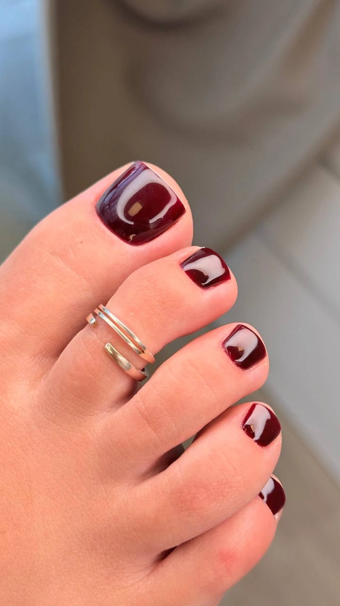
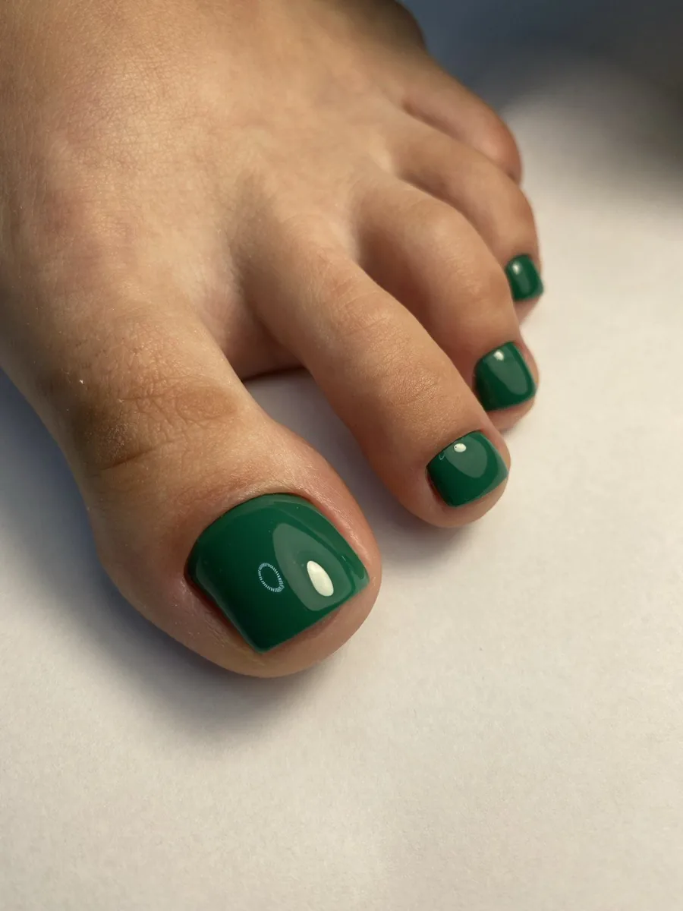
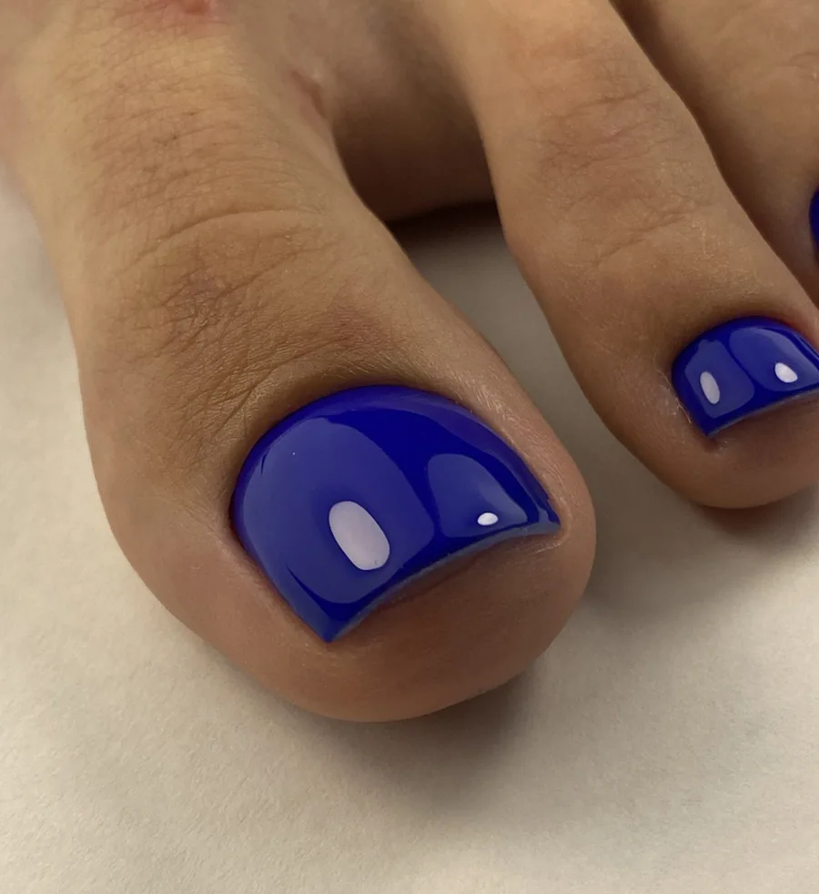

ManikyrManicureGelélakk (med forsterkning av neglene)Gel polish (with nail strengthening)Brow liftBrow lift

Olha Bratash
PedikyrPedicure
Fra 1 000 krFrom 1 000 kr
Bestill timeBook now
FøtterFeet
Pedikyr & fotpleiePedicure & foot care
Pedikyr er en individuell tilnærming til hver kunde. Behandling av sprekker, inngrodde negler, liktorner, hard hud og neglebehandling.Pedicure is an individual approach to every client. Treatment of cracks, ingrown nails, corns, hard skin and nail care.
- Fra 1 000 krFrom 1,000 NOK
- Kvinner og mennWomen and men
- Spa med MezostripSpa with Mezostrip
Velstelte føtter hele året
Pedikyr er mer enn lakk på tærne. Vi former og pleier negler, fjerner hard hud, behandler sprekker og avslutter med fuktighetsgivende pleie og massasje. Du kan velge kosmetisk pedikyr, pedikyr med gellakk eller vanlig lakk, eller utvidet spa-behandling med Mezostrip.
Vi anbefaler pedikyr én gang hver 4. uke for å holde føttene sunne og velstelte, og spesialisten tilpasser hyppigheten individuelt. Har du spesielle utfordringer, for eksempel soppinfeksjon eller inngrodde negler, ber vi deg melde fra på forhånd slik at behandlingen kan tilpasses.
Well-kept feet all year
A pedicure is more than polish on your toes. We shape and care for the nails, remove hard skin, treat cracks and finish with moisturising care and massage. Choose a cosmetic pedicure, a pedicure with gel or regular polish, or an extended spa treatment with Mezostrip.
We recommend a pedicure once every 4 weeks to keep feet healthy and well-groomed, and your specialist tailors the frequency individually. If you have specific concerns, such as a fungal infection or ingrown nails, please tell us in advance so the treatment can be adapted.
PriserPrices
PrislistePrice list
Fotpleie (Pedikyr) for kvinnerFoot care (Pedicure) for women
Kosmetisk behandling av føtter og negler: forming, hudpleie og fuktighetsgivende behandling.Cosmetic treatment of feet and nails: shaping, skin care and moisturizing treatment.

Fotpleie (Pedikyr) for mennFoot care (Pedicure) for men
Kosmetisk og hygienisk behandling med apparatbehandling av neglebånd, forming av negler og fuktighetsgivende behandling.Cosmetic and hygienic treatment with device-based cuticle care, nail shaping and moisturizing treatment.

FavorittFavoriteFotpleie + gellakk / monolakkFoot care + gel polish / monolac
Pedikyr med gel-lakk for holdbar farge i opptil 3–4 uker. Anbefales byttet i tide for å beskytte naturneglene.Pedicure with gel polish for long-lasting color up to 3–4 weeks. Recommended to change in time to protect the natural nails.
Fotpleie + vanlig lakkFoot care + regular polish
Full fotpleie med neglebehandling, hudpleie, massasje og avslutning med vanlig lakk.Complete foot care with nail treatment, skin care, massage and finishing with regular polish.
SPA Fotpleie med MezostripSPA Foot care with Mezostrip
Utvidet SPA-behandling med maskinteknikk som stimulerer sirkulasjon, støtter hudfornyelse og lindrer irritasjon.Extended SPA treatment with machine technique that stimulates circulation, supports skin renewal, and relieves irritation.
Konsultasjon med individuell behandlingConsultation with individual treatment
Profesjonell vurdering av føtter og negler med individuelt tilpasset behandlingsplan.Professional assessment of feet and nails with an individually tailored treatment plan.
Spar tidSave time
Kombiner og spar tidCombine and save time
Flere behandlinger i ett besøk – da slipper du å komme flere ganger. Beregn pris og tid, og send oss en forespørsel.Several treatments in one visit – so you do not have to come back several times. Calculate price and time and send us a request.
PedikyrPedicureBrow liftBrow liftellerorPermanent vippeløft og farging av vipperPermanent lash lift and tint
Kombinasjoner bestilles kun etter avtale på forhåndCombinations are by prior appointment only
FAQ
Ofte stilte spørsmålFrequently asked questions
Hva er forskjellen på kosmetisk og medisinsk pedikyr?What is the difference between cosmetic and medical pedicure?
Kosmetisk pedikyr handler om pleie og estetikk. Medisinsk pedikyr fokuserer på problemer som hard hud og inngrodd negl.
Cosmetic pedicure is about care and aesthetics. Medical pedicure focuses on issues such as hard skin and ingrown nails.
Hvor ofte bør jeg ta pedikyr?How often should I have a pedicure?
Vi anbefaler pedikyr én gang hver 4. uke. Spesialisten tilpasser både behandling og hyppighet av besøk individuelt etter dine behov.
We recommend a pedicure once every 4 weeks. Your specialist tailors both the care and the frequency of visits individually to your needs.
Kan jeg ta pedikyr med soppinfeksjon?Can I have a pedicure with a fungal infection?
Ja, vi tilbyr tilpasset behandling. Det er viktig at du informerer oss på forhånd. Viktig: Vi legger ikke gellakk på infiserte negler.
Yes, we offer an adapted treatment. It is important to tell us in advance. Important: We do not apply gel polish to infected nails.
Tilbyr dere pedikyr for menn?Do you offer pedicure for men?
Ja, vi har egen pedikyrbehandling for menn.
Yes, we have a dedicated pedicure treatment for men.
Klar for en time?Ready to book?
Velg tid som passer deg – det tar under ett minutt.Pick a time that suits you – it takes under a minute.